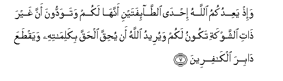

Sacred Texts Islam Index
Hypertext Qur'an Unicode Palmer Pickthall Yusuf Ali English Rodwell
Sūra VIII.: Anfāl, or the Spoils of War. Index
Previous Next

The Holy Quran, tr. by Yusuf Ali, [1934], at sacred-texts.com
Sūra VIII.: Anfāl, or the Spoils of War.
Section 1
1. Yas-aloonaka AAani al-anfali quli al-anfalu lillahi waalrrasooli faittaqoo Allaha waaslihoo thata baynikum waateeAAoo Allaha warasoolahu in kuntum mu/mineena
1. They ask thee concerning
(Things taken as) spoils of war.
Say: "(Such) spoils are
At the disposal of God
And the Apostle: so fear
God, and keep straight
The relations between yourselves:
Obey God and His Apostle,
If ye do believe."
2. Innama almu/minoona allatheena itha thukira Allahu wajilat quloobuhum wa-itha tuliyat AAalayhim ayatuhu zadat-hum eemanan waAAala rabbihim yatawakkaloona
2. For, Believers are those
Who, when God is mentioned,
Feel a tremor in their hearts,
And when they hear
His Signs rehearsed, find
Their faith strengthened,
And put (all) their trust
In their Lord;
3. Allatheena yuqeemoona alssalata wamimma razaqnahum yunfiqoona
3. Who establish regular prayers
And spend (freely) out of
The gifts We have given
Them for sustenance:
4. Ola-ika humu almu/minoona haqqan lahum darajatun AAinda rabbihim wamaghfiratun warizqun kareemun
4. Such in truth are the Believers:
They have grades of dignity
With their Lord, and forgiveness,
And generous sustenance:
5. Kama akhrajaka rabbuka min baytika bialhaqqi wa-inna fareeqan mina almu/mineena lakarihoona
5. Just as thy Lord ordered thee
Out of thy house in truth,
Even though a party among
The Believers disliked it,
6. Yujadiloonaka fee alhaqqi baAAda ma tabayyana kaannama yusaqoona ila almawti wahum yanthuroona
6. Disputing with thee concerning
The truth after it was made
Manifest, as if they were
Being driven to death
And they (actually) saw it.

7. Wa-ith yaAAidukumu Allahu ihda altta-ifatayni annaha lakum watawaddoona anna ghayra thati alshshawkati takoonu lakum wayureedu Allahu an yuhiqqa alhaqqa bikalimatihi wayaqtaAAa dabira alkafireena
7. Behold! God promised you
One of the two (enemy) parties,
That it should be yours:
Ye wished that the one
Unarmed should be yours,
But God willed
To justify the Truth
According to His words,
And to cut off the roots
Of the Unbelievers;—
8. Liyuhiqqa alhaqqa wayubtila albatila walaw kariha almujrimoona
8. That He might justify Truth
And prove Falsehood false,
Distasteful though it be
To those in guilt.
9. Ith tastagheethoona rabbakum faistajaba lakum annee mumiddukum bi-alfin mina almala-ikati murdifeena
9. Remember ye implored
The assistance of your Lord,
And He answered you:
"I will assist you
With a thousand of the angels,
Ranks on ranks."
10. Wama jaAAalahu Allahu illa bushra walitatma-inna bihi quloobukum wama alnnasru illa min AAindi Allahi inna Allaha AAazeezun hakeemun
10. God made it but a message
Of hope, and an assurance
To your hearts: (in any case)
There is no help.
Except from God:
And God is Exalted in Power,
Wise.